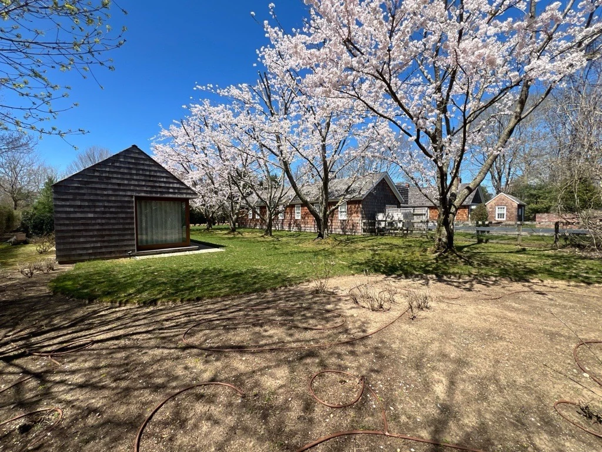
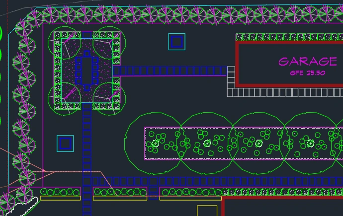
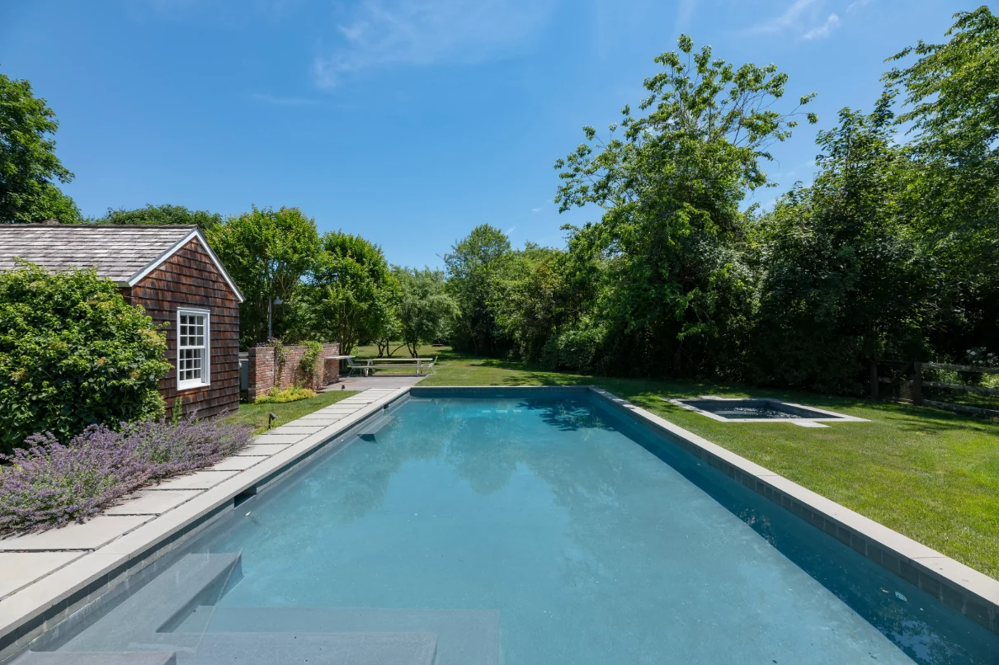
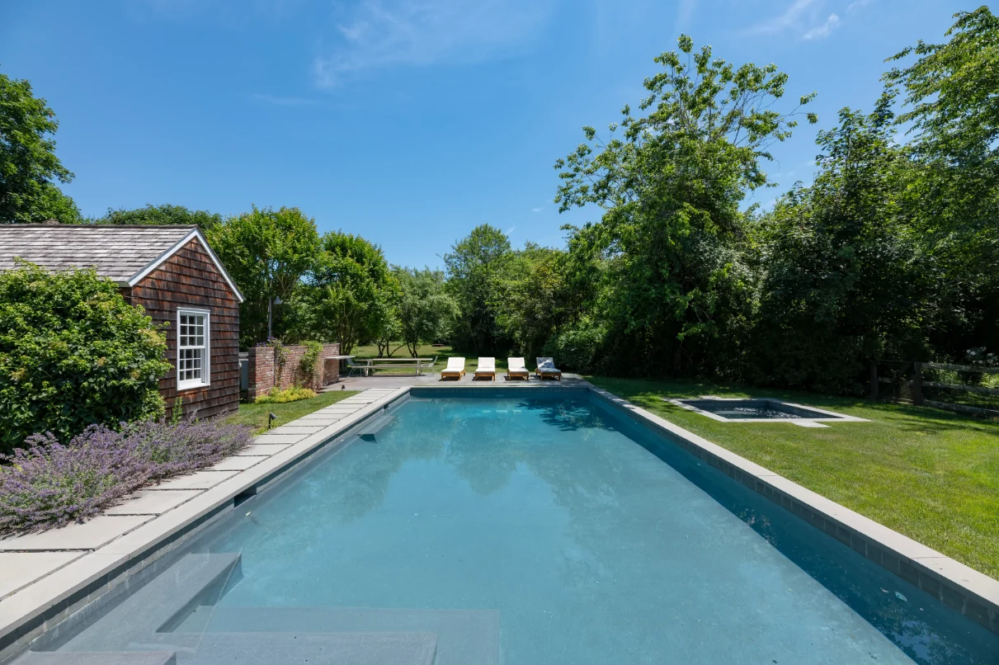

Garden dining
A plan becomes
a place to gather.
- Year
- 2026
- Role
- Creative Design Intern
- Focus
- Site interpretation · Visualization
- Tools
- Photoshop · Luma · ChatGPT

Find the room
within the garden.
The existing garden has a timber outbuilding, mature planting, and an informal lawn. The supplied CAD plan adds a clear spatial idea: a dining area held by perimeter planting, connected to the rest of the garden by stepping stones.
My visualization work translates that plan into a view at ground level, where the relationship between the table, planted edge, and outbuilding can be understood together.




My role: interpretation and visualization. Landscape design direction, plans, and supplied site references: The Laurel Group design team. Renderings are AI-assisted concept studies.
Give the plan
an atmosphere.
The dining concept uses a gravel surface to establish the gathering area. Flowering trees frame the table, while lower planting softens the boundary between the dining space and lawn.
The image brings surface, enclosure, furniture, and light into one view. The plan remains the reference for layout; the rendering explores how the garden might feel.
Connect the garden
to the pool.
A second study considers the pool setting. The supplied reference and concept share the long view past the outbuilding, making the seating area at the far end easy to compare. This adds context to the dining study and shows how different outdoor uses relate across the property.



